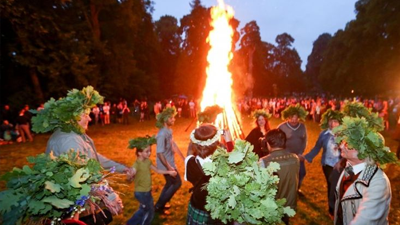

Gifts are not required but if you would like to give us something, we would highly appreciate a financial contribution.
👗 Dress Code
Semi-formal, we like to see you show up as your fancy self in a way that makes you feel comfortable and beautiful. Just avoid white and burgundy
💬 Contributing
Feel like adding something to the party, such as giving a speech, playing a song or being a babysitter? Please let us know!
Program
👰‍♂️ Wedding
On Saturday will be the wedding ceremony, dinner and party.
We will be doing this wedding the Lithuanian way: everybody will be able to stay over at the venue on us - so you can party till morning!
We're trying our best to make the most comfortable lodging for everyone, but please be prepared to share a room and/or bathroom.
👙 Afterparty
The second day there will be breakfast (mimosas!) and lunch (šašlykai!) for those who want to stay and relax in the nature, and enjoy the natural pool or a hottub - so don't forget your swimsuits.
If that's not enough, you can also stay a second night with us at the venue (from Sunday to Monday), this is possible at your own cost of €20 per person. Please let us know in the RSVP and we will make sure there's a spot for you.
Staying longer in Lithuania? The venue is located in the Trakai District which is close to many interesting places to visit. Please refer to our travel guide for inspiration.
Let us know if you're coming!
We really hope you can join us! Please let us know if you can make it by RSVP'ing below!
Will you be joining us?
We're sad to hear you can't make it 😢
But we understand, and hope to see you soon!
Thanks for RSVP'ing! ❤️ We can't wait to see you there!
How to get to this strange country?
If you're too lazy to drive for 17 hours, don't worry - airplanes exist!
From the Netherlands there are two main options:
✈️ AirBaltic (Amsterdam -> Vilnius)
Comfortable, slightly more expensive.
✈️ RyanAir or WizzAir (Eindhoven -> Vilnius)
Can be cheaper, but are less reliable, and pay extra attention to the luggage options as it's included not in the price and can be expensive.
We are so glad to have you coming to Lithuania, country of lakes, nature, witches, pagan traditions and medieval cities. Here are just a few highlights! Lithuania is car paradise, with an exception of the old towns of the main cities.
Vilnius
2-3 days to visit. Berta studied here, so good luck meeting people from there during the party who can show you around the best bars!
Old Town: Vilnius Old Town, a UNESCO World Heritage site, is packed with beautiful Baroque architecture, narrow cobblestone streets, and charming courtyards. Be sure to visit the Gates of Dawn and the Cathedral Square.
Uzupis: This bohemian neighborhood declared itself a “republic†and has its own constitution, quirky art, and a free-spirited vibe. It's a must-see for art lovers.
Gediminas' Tower: For the best views of the city, head to Gediminas' Tower. You'll also learn a bit about Lithuanian history at the museum inside.
Kaunas
1-3 days. Home city of Berta!
Old Town: Kaunas' Old Town is less crowded than Vilnius, offering a relaxed experience with historical sites like Kaunas Castle and the Town Hall Square.
Laisvės Alėja (Liberty Avenue): This pedestrian street is great for a leisurely walk, with cafes, shops, and beautiful interwar architecture.
Street Art: Kaunas has a thriving street art scene, with murals around the city, including the famous Pink Elephant mural.
Tadas Invanauskas Zoological Museum: In case of bad weather, Kaspers favorite museum houses a huge collection of stuffed animals in various impressive displays.
Seaside
Lithuania's coast offers sandy beaches, scenic dunes, and charming coastal towns. Palanga is a lively resort town with a bustling boardwalk, while Klaipėda has a historic old town with German architecture. The Curonian Spit, a UNESCO site, is a stunning natural area with endless dunes and pine forests, ideal for hiking, biking, and wildlife spotting. Berta's childhood summers were also spent there: Palanga is called a town of grandmas, and Berta's grandmother also lived there!
Trakai
Just outside Vilnius, Trakai is famous for its picturesque island castle on Lake Galvė. Surrounded by lakes, it's perfect for boat rides and scenic views. The town also has Karaim heritage, and visitors can try traditional Karaim pastries called kibinai. Yes, the wedding venue is very close to this and yes, you will be able to try kibinai during the wedding.

Joninės
Joninės (Midsummer Festival) is celebrated on June 23-24 and marks the summer solstice, so it's a perfect festivity to experience if you hop on a plane a few days earlier. It's one of Lithuania's most beloved traditions, featuring bonfires, music, dancing, and nature rituals. People gather to celebrate outdoors, often by lakes or in parks, making flower wreaths, jumping over fires for good luck, and welcoming the longest day of the year.
Top Places to Celebrate Joninės:
Kernavė: Historic and traditional festivities.
Vilnius (Vingis Park): Central, lively, and family-friendly.
Kaunas Castle Grounds: Festive with a historical backdrop.
Rumšiškės Open-Air Museum: Authentic folk atmosphere.
Wherever you go, Joninės offers a warm, festive atmosphere with a mix of tradition and Lithuanian folklore!
Typical Lithuanian Dishes
Cepelinai (Zeppelins)
Potato dumplings filled with meat, curd, or mushrooms, usually served with a creamy bacon sauce. This is Lithuania's national dish and a must-try!
Kibinai (Karaim Pastries)
Kasper's favorite food (it's a snack), these pastries are filled with meat, onions, and spices, and are a specialty of the Karaim community in Trakai.
Š altibarščiai (Cold Beet Soup) - our summer highlight, but only for the ones that dare!
A refreshing pink soup made from beets, kefir, cucumbers, and dill, served cold, typically with boiled potatoes on the side. Popular in summer.
Kugelis (Potato Casserole)
A baked potato dish similar to a potato pudding, often flavored with onions, bacon, and served with sour cream.
Bulviniai Blynai (Potato Pancakes)
Crispy potato pancakes, usually served with sour cream or mushroom sauce.
Kepta Duona (Fried Bread)
Dark rye bread, fried with garlic and cheese, often served as a snack with beer.
Skilandis
A traditional Lithuanian sausage made from pork and bacon, seasoned with garlic and other spices, then smoked and dried.
Žemaičių Blynai (Samogitian Pancakes)
Mashed potato pancakes stuffed with minced meat, usually served with mushroom or sour cream sauce.
Meduolis
A traditional dessert made with honey and spices, often layered with cream.
Useful Phrases in Lithuanian
Hello
Labas
"Labas!" as if you're saying "Llama!" with extra excitement.
Goodbye
Viso gero
“Vee-so geh-ro!”
Please
Prašau
“Prah-shaw!” a bit like you're a crow
Thank you
Ačiū
Say it like “Ah-choo!” like a polite sneeze.
Yes
Taip
Just nod and say “tape”, like you're approving a memo.
No
Ne
Just say it like “neh”, with a hint of a friendly shrug.
Excuse me / Sorry
Atsiprašau
Think “Ouchie! Prasha!” and make it sound very remorseful.
Do you speak English?
Ar kalbate angliškai?
If you're only going to remember one, make it this one!
How much does it cost?
Kiek tai kainuoja?
We know this one is especially important to you Dutchies!
Cheers!
Į sveikatą!
Pronounce it as “Ee svey-kata!” Perfect for toasts!
Delicious
Skanu
Say it like “scahn-oo!” with a chef's kiss gesture.
The check, please
Sąskaitą, prašau
“Sausage-cate!” (kind of) plus a little “prah-shaw.”
Oh no, no, no, you kissed wrong!
„Negerai, negerai, negerai pabučiavai!”
Perfect for teasing the newlyweds if their kiss was a little shy - get the crowd to chant it for laughs!
Beer
Alus
Simple but essential - “Ah-loos!” cheers to good beer!
Vodka
Degtinė
For the brave-hearted, say it like “Deg-teeneh!
Another Round!
Dar vieną!
When it's time to keep the good times rolling: “Dahr vee-eh-nah!”
Bottoms Up!
Iki dugno!
Literally means “To the bottom!” Perfect for enthusiastic toasting!
Where is my...?
Kur yra mano...?
Combine with "Alus" (beer) or "Degtinė" (vodka) for a fun scavenger hunt!
Don't cut a mushroom
Nepjauk grybo
Meaning "don't do anything stupid", ah you weird Lithuanians